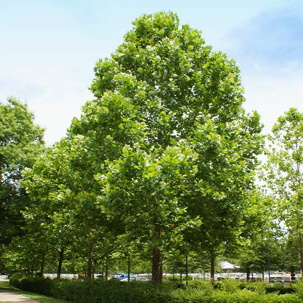
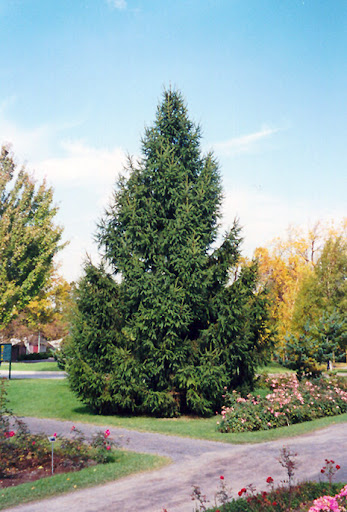
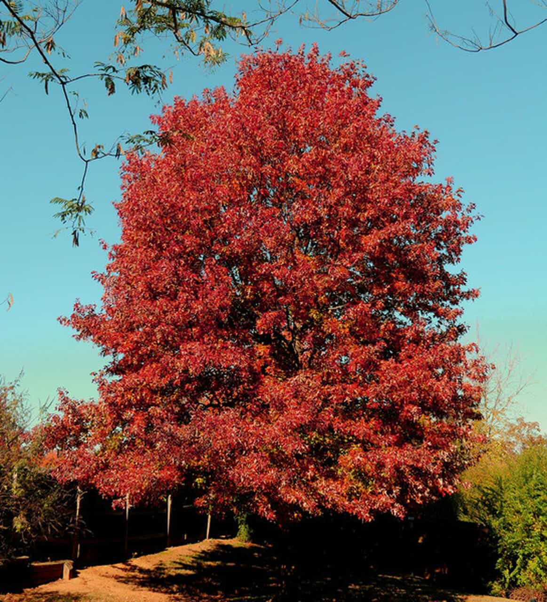

Hello!
Welcome to Down to the Roots: A Carbon Emissions Calculator!
This website contains a calculator to estimate the number of trees needed to offset a community's carbon emissions. Input your community's data and get an estimate!
This project was based on Fermi Question principles, so the answer is just an estimation. It is meant to provide people with tangible goals as steps toward stopping global warming.
Fermi Questions are a method for making quick estimates of quantities that are difficult or impossible to measure directly. In the context of climate change, this approach can be very useful.
While the results may not be precise, they provide people with a concrete reference point and motivation to take action. This way, the abstract problem of climate change becomes more tangible and easier to understand.
American Sycamore: Costs $650 and sequesters 454 kg of CO2 annually. low maintenance and fast growing shade trees. They are tough and sturdy, tolerating extreme weather conditions, pollution, salt and even wet soils. These adaptable and hardy shade trees have a very long life expectancy. These trees are best if you are on a tight budget.
Norway Spruce: Costs $946 and sequesters 750 kg of CO2 annually. This tree is tolerant and adaptable. The Norway Spruce tolerates pollution and drought and is deer resistant. It also adapts to any well drained soil and stands up to heavy snow and wind. This sturdy evergreen tree is also extremely cold hardy growing in the coldest regions in the US down to a frigid growing zone 2. Last, Picea abies makes a fabulous large privacy hedge, windbreak, or sound barrier. It is great if you are not on a budget, as it is the most effecient out of these three trees.
Northern Red Oak: Costs $1,260 and sequesters 204 kg of CO2 annually. This stunning tree grows fast and provides superb shade in the heat of summer. It is an extremely fast growing tree that can reach an impressive height of 75 feet and a spread of 45 feet. Wow! Now that is a big tree. Because of its hard wood, this hardy tree has the ability to grow to massive heights and sustain a long life span. This tree is adaptable and tolerant, making it super easy to grow and no maintenance once it's established! This tree is perfect if you want to spend more money on a more beautiful tree and is still effecient in carbon sequestration.
